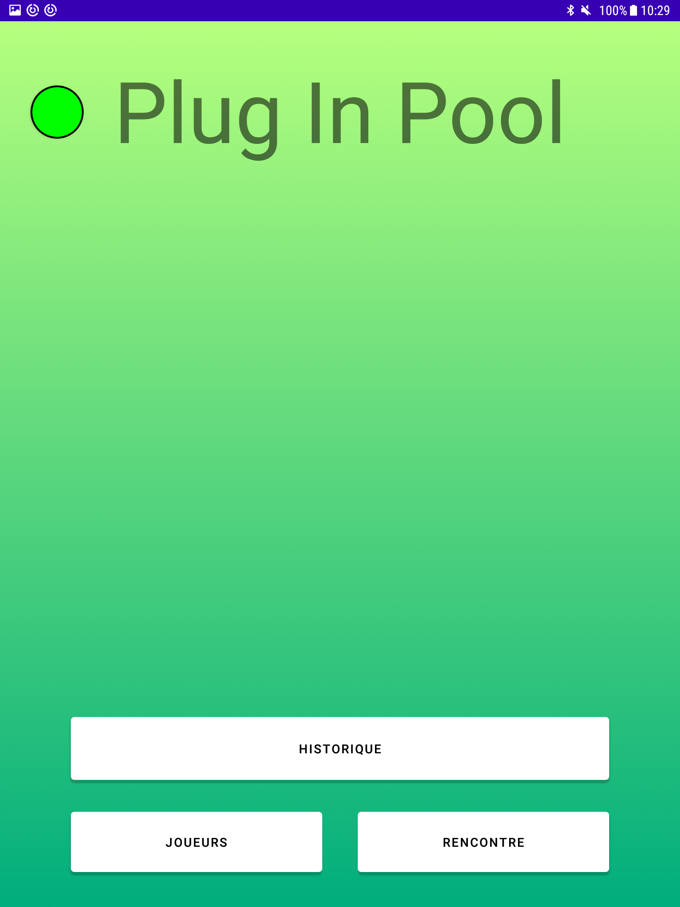
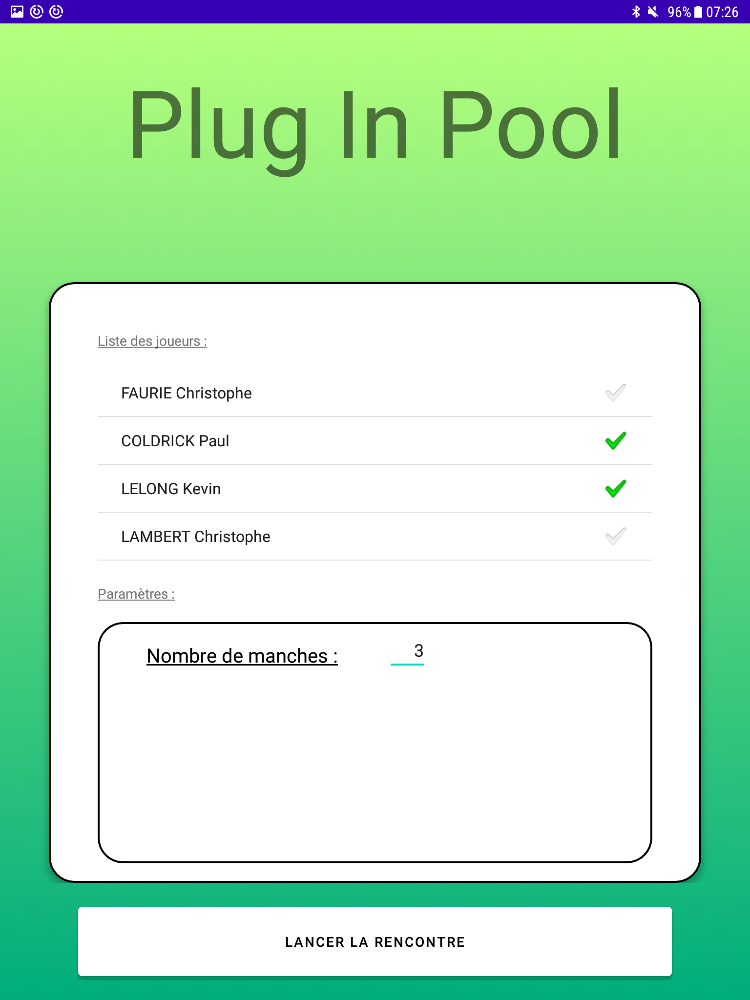
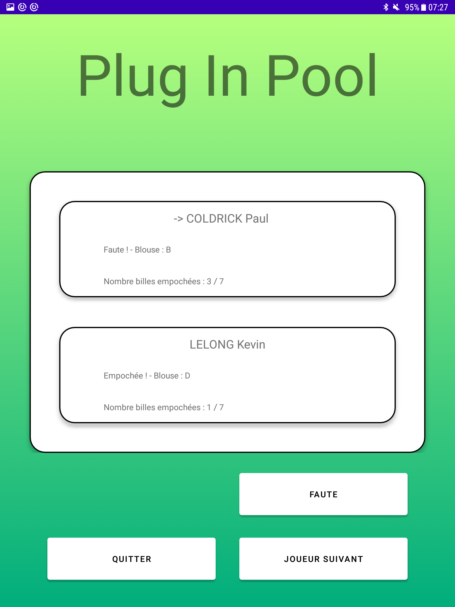

Présentation
Système numérique permettant de jouer au billard BlackBall
- Automatisation du déroulement d’une partie
- Affichage du nombre de billes empochées et/ou restantes
- Enregistrement des données d’une partie finie
Le système Plug-in-Pool est décomposé en trois modules :
- Module de gestion de partie (Mobile-POOL IR) : les joueurs paramètrent et lancent la partie à partir d’une application sur un terminal mobile (sous Android) ;
- Module de détection des billes (Détection-POOL EC): le billard est équipé de capteurs permettant de détecter l’empochage et la couleur d’une bille.
- Module de visualisation de partie (Écran-POOL IR) : le déroulement de la partie est affiché sur un écran de télévision.
Fonctionnalités Mobile-POOL
Application mobile qui gère le déroulement des rencontres
- Initialiser une communication
- Connecter une table de billard
- Dialoguer avec une table de billard
- Enregistrer un nouveau joueur
- Sélectionner deux joueurs pour une partie
- Paramétrer le nombre de manches gagnantes pour une partie
- Démarrer une partie
- Gérer la partie et Afficher le score d’une partie
- Afficher le joueur courant
- Afficher les billes empochées/à empocher de chaque joueur
- Terminer une partie
- Afficher les statistiques d'une partie
Documentation du code
https://btssn-lasalle-84.github.io/plug-in-pool-2022/
Captures Mobile-POOL



TODOs Mobile-POOL
- [ ] Enregistrer une partie
- [ ] Afficher l’historique des parties
- [ ] Améliorer l'affichage graphique du déroulement d'une partie et du score
Fonctionnalités Écran-POOL
Ce module correspond à la partie “affichage” du système. Il a pour objectifs de réaliser la récupération d’informations envoyées par le terminal mobile et l’affichage de la rencontre actuelle. Il communique en Bluetooth uniquement avec le terminal mobile Android.
Sur l'écran, les joueurs pourront visualiser en continu :
- le nom des joueurs (si existant), la durée écoulée de la partie ;
- les billes empochées et restantes,
- le nombre de manches gagnées par chaque joueur
- des statistiques
L’application Qt s’exécutera en mode “Kiosque” sur le Raspberry Pi.
Historique des versions
- version 0.2 : 25/05/2022
- Version 0.1 : 02/04/2022
Auteurs
Kanban
plug-in-pool-2022